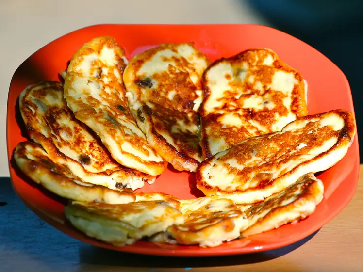

Фото: Juerg Vollmer from Zürich, Switzerland ; cut by Off-shell, CC BY-SA 2.0

Сырники в духовке без муки
Сырники на крахмале, запечённые на противне без масла для жарки
35 мин3 порц.260 ккал на порциюБ 25 · Ж 10 · У 16Русская кухня
Продукты на 3 порц.
- Творог 5%400 г
- Яйцо куриное1 шт
- Крахмал1 ст. л.
- Сахар1 ст. л.
- Ванильный сахар по желанию1 ч. л.
- Соль1 щеп.
- Растительное масло1 ч. л.
- Сметана 20% по желанию3 ст. л.
Как готовить
- Возьмите сухой творог 5-9%. Разомните его вилкой с яйцом, сахаром, ванильным сахаром и солью.
- Добавьте крахмал и перемешайте до однородной плотной массы.
- Застелите противень бумагой и смажьте маслом. Мокрыми руками сформуйте 9-10 сырников толщиной 1,5 см.
- Запекайте при 180 °C (средний жар) 12 минут, переверните лопаткой и запекайте ещё 8-10 минут до румяного цвета.
- Дайте постоять 5 минут на противне и подавайте со сметаной.
Совет. Влажный творог отожмите через марлю, иначе сырники растекутся. Можно печь в силиконовых формочках для маффинов, тогда переворачивать не нужно.